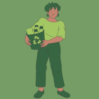

Colaborador 1
fulana de tal
Descubra como pequenos empreendedores estão fazendo a diferença com práticas sustentáveis.

Green Cycle é uma iniciativa de estudantes que promove a reciclagem e o empreendedorismo sustentável.
Nosso objetivo é conscientizar a sociedade e apoiar empreendedores que contribuem para um futuro mais verde. Nosso site visa a conscientização sobre o impacto da poluição no meio ambiente, ajudando a preservar os recursos naturais e reduzir a poluição, Construindo um futuro sustentável. E também trás visibilidade aos microempreendedores que produzem artigos por meio da reciclagem. Uma maneira de comoção ao ver a degradação do meio ambiente por conta da poluição, fazendo com que seja uma forma de reduzir danos e trazer uma melhor qualidade de vida.
Conheça alguns dos parceiros que estão ao nosso lado em busca de um futuro mais sustentável.
Descubra como pequenos empreendedores estão fazendo a diferença com práticas sustentáveis.
Conheça projetos sustentáveis perto de você
artigos a fazer
teste teste teste
teste teste teste
teste teste teste
Tem algo a nos dizer? Envie seu feedback ou suas sugestões:
GREENCYCLE2K24@GMAIL.COM
(11)4002-8922